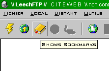
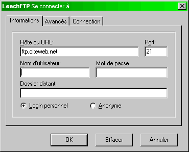

|
ENVOYER DES FICHIERS SUR LE SERVEUR, PAR FTP
Pour publier leurs
pages sur notre serveur, les membres de CITEWEB disposent d'un compte sur notre
serveur FTP. C'est un serveur dédié aux transferts de fichiers (envoi/réception).
Ce compte vous permet, grâce à un client ftp, (un programme que vous faites
tourner sur votre ordinateur quand vous voulez accéder à notre serveur) de vous
communiquer à la partie du disque dur de CITEWEB qui vous est réservée.
Nous allons vous
expliquer maintenant comment vous connecter à notre serveur avec "LeechFTP",
un client ftp simple, gratuit et pour nous actuellement le plus évolué.
Pour vous faciliter son utilisation, un des administrateurs de CITEWEB, Charles
"Chandra" SAUTHIER, l'a traduit en francais.
Vous pouvez bien sur utiliser un client FTP classique si vous en avez déja
un, en précisant les paramètres précisés en bas
de la page.
> Se connecter
à son compte avec LeechFTP
1- Téléchargez
tout d'abord lftp13.exe
(658 Ko)
2- Double
cliquez sur son icone pour lancer son installation, un message de bienvenue
s'affiche, cliquez sur "Next"
3- Le programme vous demande alors de rentrer le répertoire ou vous voulez
l'installer, si le répertoire indiqué vous convient, cliquez a
nouveau sur "Next"
 4-
le programme d'installation copie les fichiers, quand il a terminé, cliquez
sur "Finished"
5- Leech FTP est maintenant installé, pour le lancer allez dans le menu
démarrer de Windows puis programmes puis LeechFTP
6- Une fois lancé, LeechFTP est déja préconfiguré
pour se connecter sur le serveur FTP de CITEWEB. Pour se connecter à
votre compte CITEWEB, il suffit de se connecter à internet par l'intermédiaire
de votre prestataire, de lancer LeechFTP puis de cliquer sur le petit livre
jaune (a coté de l'éclair et du monde) - voir capture d'ecran
- puis de double cliquer sur l'icone "mon_compte". Une fenètre
va alors s'ouvrir pour vous demander votre login et votre mot de passe CITEWEB.
7- Une fois
connecté, l'écran de LeechFTP est divisé en trois parties,
de gauche a droite on peut voir: une colonne indiquant la progression des transferts,
la colonne du milieu qui est votre disque dur et la colonne de droite qui indique
le listing de ce que contient votre compte.
8- Pour copier
des fichiers de votre disque dur à votre compte, il suffit simplement
de les selectionner dans la colonne du mileu et sans relacher le bouton de la
souris, glisser sur la colonne de droite puis lacher.. la copie se lancera alors.
Note: Si vous etes
perdus ne vous affolez pas, lisez bien, toutes les commandes sont traduites
en français.
> Comment
ne pas rentrer a chaque fois son login et son mot de passe ?
1- Lancez LeechFTP, cliquez sur le livre jaune (première photo)
2- Sélectionnez l'icone "mon_compte"
3- Cliquez sur le bouton droit de votre souris et sélectionnez "Editer
le signet"
4- Remplissez les cases ainsi:
nom d'utilisateur:
votre login CITEWEB et mot de passe: votre mot de passe CITEWEB
laissez vide la case dossier distant, verifiez que login personnel est bien
coché et cliquez sur OK pour valider cette nouvelle configuration

> Les paramètres
de CITEWEB pour les autres clients FTP
Host address /serveur
ftp: ftp.citeweb.net (le nom de notre serveur)
Port: 21
Login: Votre login
Password: Votre mot de passe
Dossier distant: laisser vide
NOTE:
Votre compte CITEWEB est limité au départ à 19,98 Mo. Vous ne pouvez donc stocker
sur ce répertoire que 19,98 Megaoctets de données. Vous pouvez faire une demande
d'augmentation de place disque au conseil des
utilisateurs pour pouvoir disposer de plus de place.
Les fichiers contenant des virus ou bien d'une taille superieure à la
limite indiquée dans les regles sont automatiquement effacés.
|